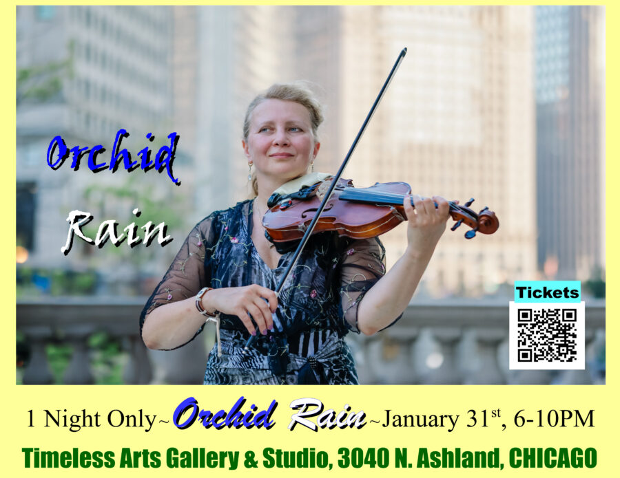

Orchid Rain, Virtuoso : Solo Violin Performance @TimelessArtsChicago
I was at an outdoor performance this past Fall, and I heard someone in the crowd saying Natalie’s the “Real Deal!”. I thought, “Yeah, she is the real deal.” Amazing talent. When I hear Natalie playing, my heart sings, and I really get swept up in the moment, into a world of wonder, almost disbelief. Her grace and elegance is so natural, as if this instrument was made exclusively for her.
Step outside your comfort zone, and witness something wonderful this weekend.
Help welcome Natalie to Chicago by attending her one-night performance at Timeless Arts.
Natalie, of course, plays many classical favorites by Bach, Beethoven, Vivaldi and Mozart, but here unique style of improvising & embellishing many classic rock and pop hits from today and yesteryear, really draws people to her.
Playing since she was 7 years old, Natalie rose to the top of the ranks immediately as a young violinist, and her love and dedication for the violin disciplined her to practice for hours and hours, daily, for years.
There are only 30 of 43 seats remaining for her Saturday, January 31st performance at Timeless Arts.
Bring friends and family to this special night of art and music.
Light Refreshments will be served, and this is also a B.Y.O.B. event for those 21 & over.